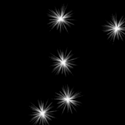

ef_spark;
Returns: N/A.
This constant is for use in the functions effect_create_above and effect_create_below,
and will create a spark effect as illustrated in the image below:

if power
{
effect_create_above(ef_spark, bbox_left + random(sprite_width), bbox_top + random(sprite_height), choose(0, 1), merge_color(c_white, c_yellow, random(1));
}
The above code will create a spark effect over the area of the instance if the variable "power" is true.